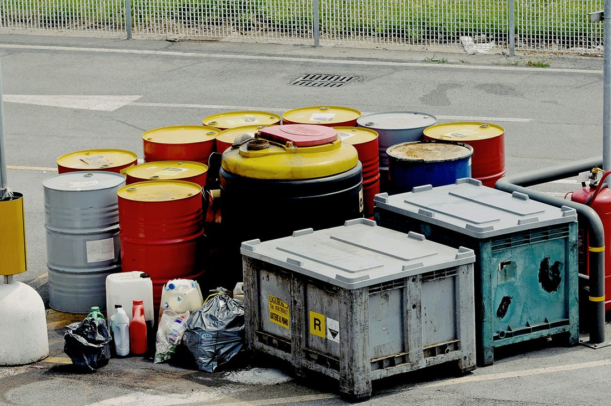
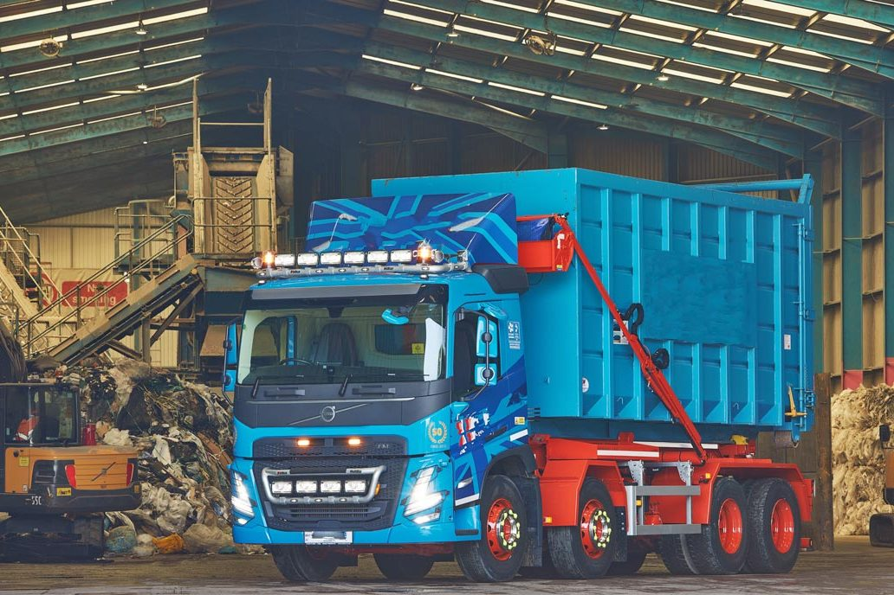
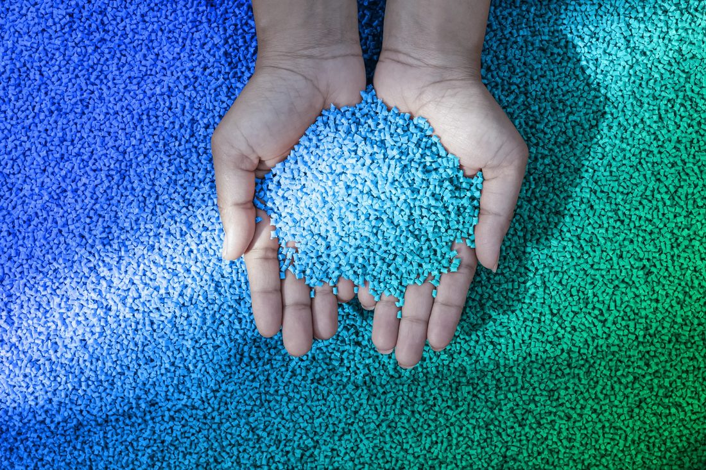
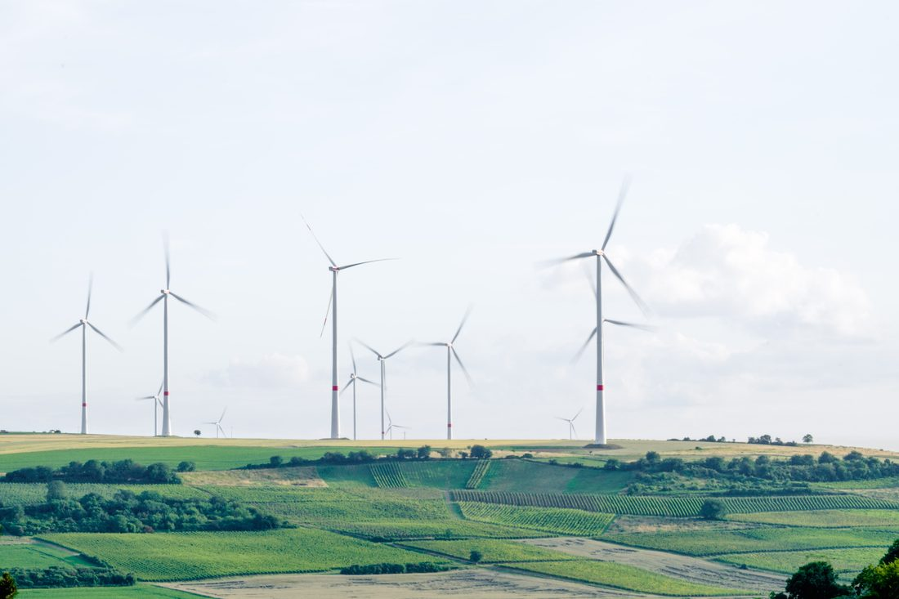
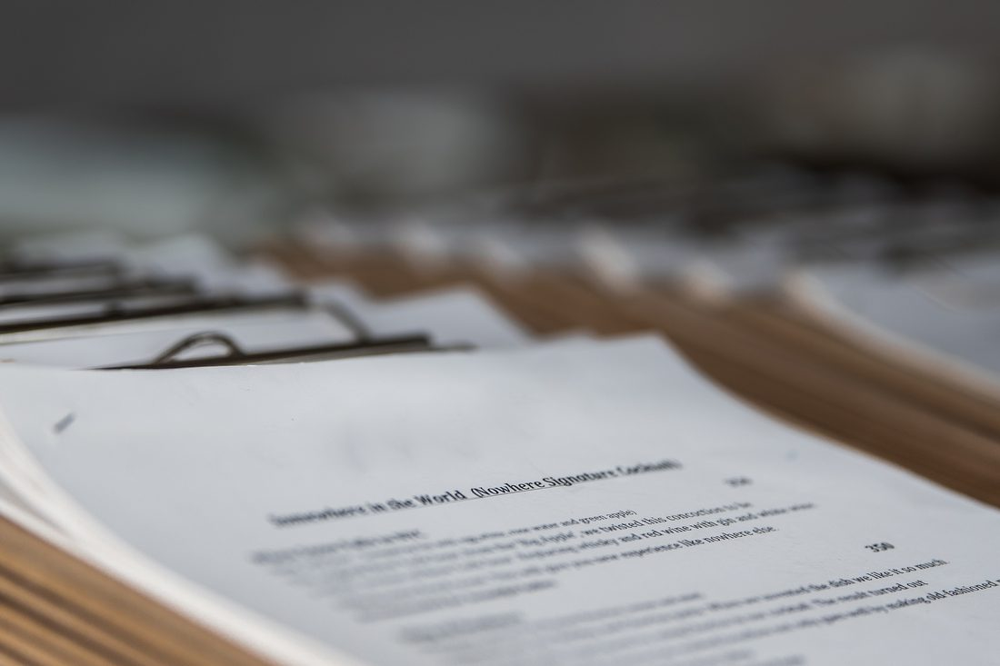

Intermediazione rifiuti
Mettiamo in contatto chi produce i rifiuti con trasportatori e impianti autorizzati, alle migliori condizioni.
Scopri il servizioIntermediazione rifiuti speciali · Catania
Organizziamo per la tua azienda raccolta, trasporto e avvio a recupero o smaltimento dei rifiuti speciali, pericolosi e non pericolosi, con trasportatori e impianti autorizzati. Un solo interlocutore, ogni passaggio tracciato.
Cosa facciamo
Come intermediari iscritti all’Albo, ci interponiamo tra chi produce o detiene i rifiuti e le imprese che li trasportano, li recuperano o li smaltiscono: cerchiamo le migliori condizioni tecnico-economiche e verifichiamo che ogni soggetto coinvolto sia autorizzato.
Mettiamo in contatto chi produce i rifiuti con trasportatori e impianti autorizzati, alle migliori condizioni.
Scopri il servizio
Raccolta programmata o su richiesta, per aziende, enti pubblici e privati.
Scopri il servizio
Vettori autorizzati, carichi tracciati, ogni movimentazione monitorata.
Scopri il servizio
Impianti autorizzati e, quando possibile, recupero dei materiali.
Scopri il servizio
Supporto tecnico e normativo per gestire i rifiuti senza rischi di sanzioni.
Scopri il servizio
Formulari, registri di carico e scarico e MUD sempre in ordine.
Scopri il servizioCome lavoriamo
Valutiamo con te il tipo di rifiuto, le quantità e la documentazione necessaria per gestirlo a norma.
Selezioniamo trasportatori e impianti autorizzati, verificando l’idoneità del trasportatore, dei mezzi e della destinazione.
Coordiniamo raccolta, trasporto e avvio a recupero o smaltimento, con un servizio programmato o su richiesta.
Seguiamo formulari, registri di carico e scarico e scadenze come il MUD, per una tracciabilità completa.
Trasparenza e Modello 231
AMSIC ha adottato un Modello di organizzazione, gestione e controllo ai sensi del D.Lgs. 231/2001, con un Codice Etico e procedure di controllo interne che regolano il comportamento di tutte le persone coinvolte. Il rispetto del Modello è affidato a un Organismo di Vigilanza indipendente, presieduto dal Prof. Avv. Giuseppe Berretta.
Sistema di gestione per la prevenzione dei rischi e la garanzia di conformità normativa, supervisionato da un Organismo di Vigilanza indipendente.
Controllo rigoroso dei partner e delle attività, con verifica delle autorizzazioni di tutti i soggetti coinvolti.
Politiche antimafia operative e un canale per segnalare le irregolarità, con piena tutela dei segnalanti.
Controllo e sicurezza su tutti i flussi finanziari aziendali, per la massima trasparenza in ogni transazione.

Chi siamo
AMSIC nasce da un team di professionisti con oltre vent’anni di esperienza nella gestione dei rifiuti speciali, pericolosi e non. La nostra missione è garantire un servizio sicuro, trasparente e conforme alle normative, con soluzioni su misura per imprese pubbliche e private.
Conosci AMSICRaccontaci che rifiuto devi gestire, in che quantità e dove: ti indichiamo la soluzione più adatta e conforme alle normative.